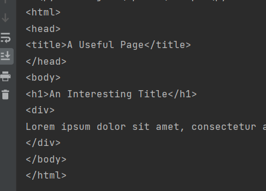

获取单个页面信息
获取HTML
1 | from urllib.request import urlopen |
urllib是自带库，不用安装
抓取HTML中的所有标签
安装beautifulsoup4库。
https://www.crummy.com/software/BeautifulSoup/bs4/doc/index.zh.html
打印dom对象
1 | from urllib.request import urlopen |

捕捉错误
1 | try: |
抓取HTML中的指定标签
1 | try: |
get_text()会除去html文档中的所有标签，最好用在最里层标签，在外层标签使用会把内层标签删除掉。
findAll(tag, attributes, recursive, text, limit, keywords)
tag: 一个标签的名称或多个标签名称组成的 Python 列表做标签参数。
1 | htmlObj.findAll(["h1","h2","span"]) |
attributes: 字典封装一个标签的若干属性和对应的属性值。
1 | htmlObj.findAll(["span"],{"class":{"green","red"}}) |
=> 抓取<span class="green"> 与 <span class = "red"> 的标签。
recursive: 递归参数 默认True 查找子标签以及子标签的子标签……；如果为False只查找文档的一级标签。
text: 用表签的文本内容查找。
1 | htmlObj.findAll(["span"],text="the prince") |
查找全部span标签中有“the prince”（完全匹配）的标签。
limit: 查找几个标签。
keyword: 查找具有指定属性的标签。
1 | htmlObj.findAll(id="text") |
=> 查找标签中有属性id="text" 的标签。可以被第二个参数attributes替代。
处理树形结构
获取第一个标签：
bsObj.标签
获取第一个标签后代：
bsObj.标签.findAll(“标签”)
—- 下面这些都是属性 不是标签
查兄弟标签：
next_siblings;获取的兄弟标签不含自身，而且只能查后面的标签。
previous_siblings;获取前面的兄弟标签。
可以去掉s只获取一个标签而不是生成器对象。
查父标签：
parents。获取所有父级标签的生成器对象。
可以去掉s只获取一个父级标签。
正则表达式
https://www.liaoxuefeng.com/wiki/1016959663602400/1017639890281664
直接用re.complie(regexp)当findAll的参数
抓取多页面
获取页面中的超链接
获取标签的属性
1 | print(htmlObj.findAll("a")[1]) |
抓取链接
1 | try: |

分析外链定义规则
/item/ 开头
1 | try: |
递归遍历网站
获取链接
1 | pages = set() |
url编码： 需要对符号和中文进行编码方便传输，英文和数字进行url编码还是其本身。
使用API
1 | from urllib.request import urlopen |
response = b'<h1>Hello World!</h1>' # b' ' 表示这是一个 bytes 对象作用：
b” “前缀表示：后面字符串是bytes 类型。
用处：
网络编程中，服务器和浏览器只认bytes 类型数据。
2
>
解析json对象
json是默认库，不用安装。
1 | from urllib.request import urlopen |

json转换成字典，json数组转换成列表，json字符串转换成python字符串。
1 | #不对json进行字符编码也可以 |
数据存储
下载网站上的文件而不是其URL
1 | # -- coding: utf-8 -- |
urlretrieve(arg1,arg2)
arg1: 资源url地址
arg2: 文件要保存的位置
将数据保存至数据库中。PyMySQL
读取文档
从页面的meta标签中查看编码格式
读取csv、pdf、docx 略
表单
Request库负责处理复杂的http请求、cookie，header等内容。
发送post请求
1 | import requests |
上传文件
1 | <form action="processing2.php" method="post" enctype="multipart/form-data"> |
1 | import requests |
处理cookie
1 | # -- coding: utf-8 -- |
第二次请求：
用session处理
1 | import requests |
会话（session）对象（调用 requests.Session() 获取）会持续跟踪会话信 息，像 cookie、header，甚至包括运行 HTTP 协议的信息，比如 HTTPAdapter（为 HTTP 和 HTTPS 的链接会话提供统一接口）。
采集JavaScript
在使用JavaScript的网站中，有些dom内容是动态创建的，前面的技术并不能采集。
解决方案：直接从JavaScript代码中采集内容。
用python运行JavaScript，直接采集你在浏览器界面看到的内容。
使用Seleninum与 Chrome headless
Seleninum是个自动化测试脚本，可以模仿人的操作，比如点击按钮，输入表单等。需要与第三方浏览器配合使用。
Chrome headless 是一个浏览器，但是叫“无头浏览器”，没有用户界面，但是可以输出界面截图。会把网站加载到内存中执行JavaScript。就是一个没有用户界面的浏览器。
安装Chrome headless(win)
在Chrome地址栏中输入chrome://version/ 查看版本（需要60以上）
去https://chromedriver.chromium.org/ 下载对应版本的无头浏览器。
pip 安装 Seleninum
使用
将ChromeDriver.exe放在与脚本同一个目录下。
1 | from selenium import webdriver |
关键在于第11行，等待的时间无法正确确认。
改进
监听页面中出现某个元素之后，进行抓取。
1 | from selenium import webdriver |
关键在于第14行，监听页面上出现带有id="loadedButton"的元素之后再执行后续代码，超时时间为10秒。此操作称之为隐式等待。
设定好明确等待时间的称之为显示等待。
Seleninum可以执行js脚本
1 | js = 'var action=document.documentElement.scrollTop=100000' #滑动滚动条 |
复杂元素使用Xpath定位等待。
https://zhuanlan.zhihu.com/p/29436838
1 | element = WebDriverWait(driver,60).until(EC.presence_of_element_located((By.XPATH,'//div[@class="loading-state]'))) |
爬取B站评论区脚本
1 | # -- coding: utf-8 -- |